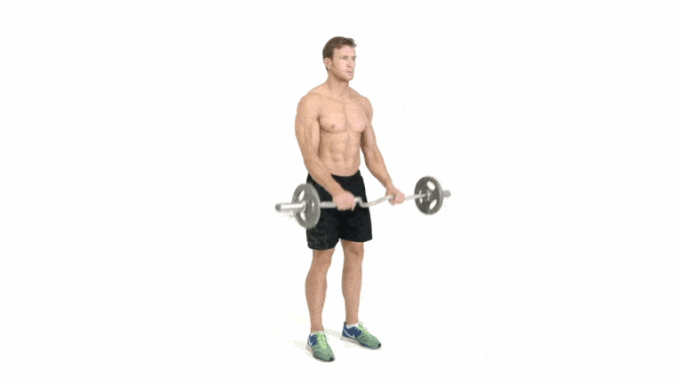

How to do it:
1. Stand upright with your feet shoulder-width apart. Grasp a barbell with an overhand grip (palms facing down), hands slightly wider than shoulder-width apart.
2. Keeping your upper arms stationary, curl the barbell up towards your shoulders by flexing your elbows.
3. Slowly lower the barbell back to the starting position in a controlled manner.
2-3 sets of 8-12 reps
